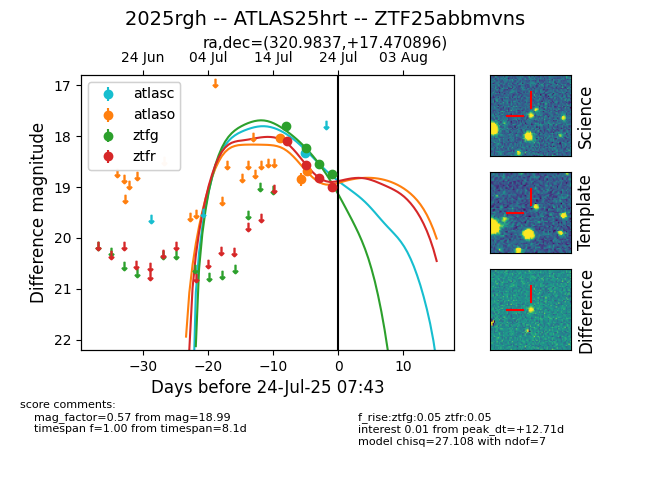

Target ZTF25abbmvns at 2025-07-24 07:43, see:
FINK: fink-portal.org/ZTF25abbmvns
Lasair: lasair-ztf.lsst.ac.uk/objects/ZTF25abbmvns
ALeRCE: alerce.online/object/ZTF25abbmvns
TNS: wis-tns.org/object/2025rgh
YSE: ziggy.ucolick.org/yse/transient_detail/2025rgh
alt names
ZTF25abbmvns (ztf,fink)
2025rgh (tns,yse)
ATLAS25hrt (atlas)
coordinates:
equatorial (ra, dec) = (320.9837,+17.47090)
galactic (l, b) = (68.4558,-22.78086)
photometry
last atlasc=18.34, atlaso=18.68, ztfg=18.74, ztfr=18.99
1 atlasc, 3 atlaso, 4 ztfg, 4 ztfr detections
